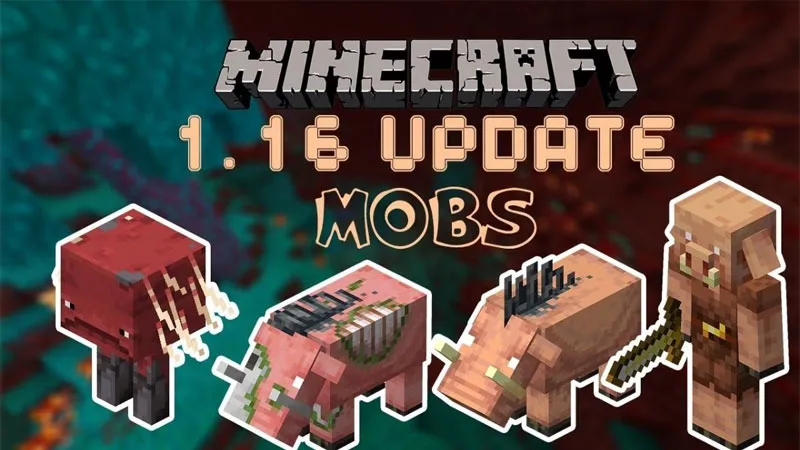
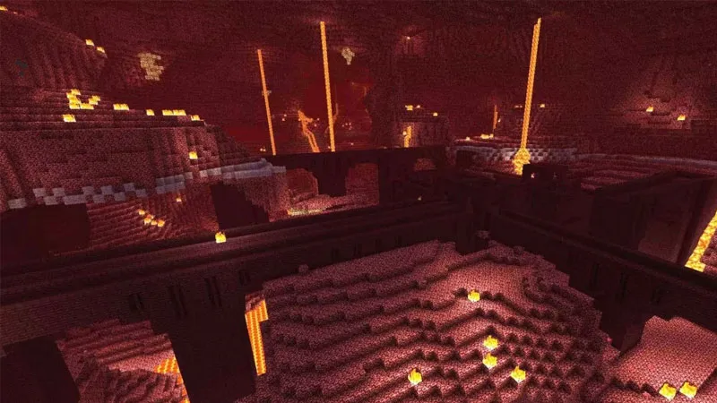
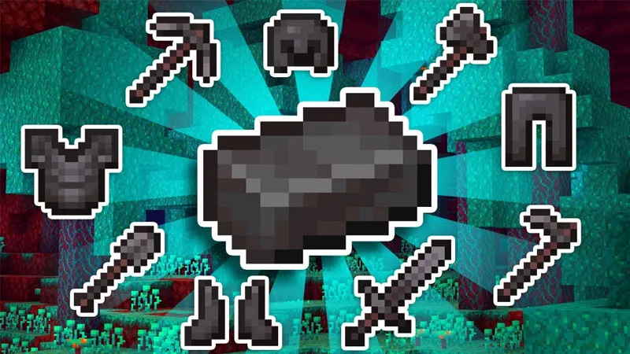
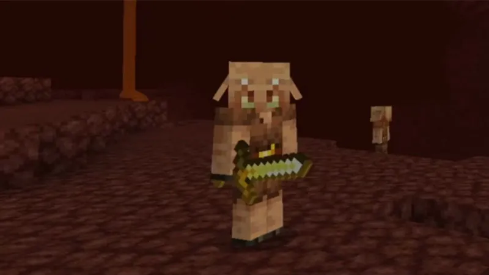
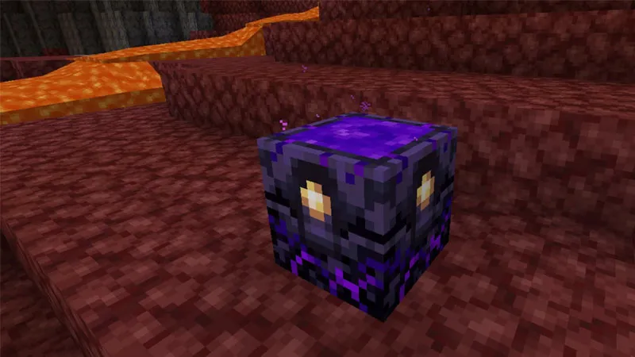

Minecraft PE 1.16.0
có nhiều thay đổi mang đến trải nghiệm thú vị cho người dùng. Tiêu biểu như:
Quần xã sinh vật mới gồm có:
Rừng công vênh, rừng đỏ thẫm, thung lũng linh hồn, đồng bằng bazan, chất thải Nether, Nether Biome Fog.
Mobs mới gồm có:
Piglins (sinh vật này sẽ tấn công khi nhìn thấy bạn, nhưng chúng thích vàng và bị vàng làm phân tâm,
nên hãy tận dụng điều này để tránh chúng); Hoglins (chúng là những con thú sống ở khu rừng đỏ thẫm
và rất hung giữ, chúng sẽ tấn công người chơi khi nhìn thấy); Stider (chúng trung lập và tấn công Nether,
bạn có thể điều khiển chúng thông qua cây nấm); Zombified Piglins; Zoglins (hay Hoglins Zombified).
Một số tính năng mới như:
Cổng thông tin có thể tìm thấy ngay trong Nether và Overworld; thêm căn cứ sót lại (thêm 4 loại tàn tích là Cầu,
chuồng trại Hoglin, đơn vị nhà ở và phòng chứa kho báu); đá đen với màu tối (sử dụng lò nung,
các bạn có thể chế tạo đá đen thành các công cụ bằng đá); Respawn Anchor – neo hồi sinh;
Vật phẩm Netherite (chúng trôi nổi trong dung nham và chúng tồn tại lâu hơn kim cương);
chế tạo ra Netherite từ 4 thỏi vàng và 4 mảnh mụn của Netherite; Crating Netherite Tools
và Armor; khối mục tiêu; tốc độ linh hồn nhanh hơn; Lodestone khối mới giúp bạn có được vòng bi,...
Các khối mới:
Thân cây đỏ thẫm và Thân cây cong vênh chúng không cháy; Sợi nấm có màu đỏ thẩm và thân cong;
Các khối đá Bazan; Các khối đá bề mặt mới (Crimson Nylium và Warped Nylium),
Dùng bộ xương trên Netherrack có thể lây lan Nylium; Thảm thực vật mới (Nether Sprouts,
Crimson Roots, and Warped Roots); Thêm 2 loại nấm (Crimson and Warped); Cây leo;
Nguồn ánh sáng Shroomlights; Đã thêm Soul Soil; Soul Campfire mới;
Đèn lồng linh hồn chế tác từ đất linh hồn và ngọn đuốc linh hồn;
Đã thêm các bản vá của Blackstone và Gravel; Quặng vàng có thể sinh ra trong Nether;
Đã thêm các khối gạch đục, nứt, thạch anh.
Một số thay đổi khác:
Thay đổi lối chơi, cửa sổ máy chủ mới, thay đổi kicking và cấm, lệnh Spawnpoint thay đổi.
Sửa lỗi:
Sửa một số sự cố (sửa một số lỗi có thể xảy ra trong quá trình chơi trò chơi,
sự cố có thể xảy ra khi nhấp vào ‘Đọc thêm’ trên màn hình, sự cố với Hộp Shulker vô hình,
sự cố có thể xảy ra trong The End, sự cố do lửa lan đến Tổ ong,…);
Cải thiện (hiệu suất khi phá vỡ nhiều cây, bản đồ, độ tin cậy của các ký tự,
khung hình được tối ưu),….